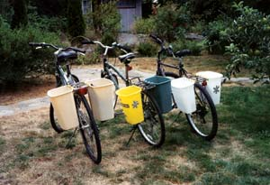
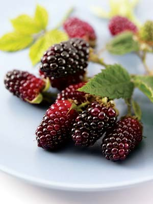

Inexpensive Bicycle Baskets
Show Your Stuff at the County Fair
Make a Free Portable Chicken Waterer
Landscaping on a Budget
“Here We Go ‘Round the Mulberry Bush”
Raise Your Own Fishing Bait
Web Searches Made Easy
Washers from Pennies
On Chopping Garlic
T-shirt Seat Covers
Last spring, we moved to an area that is only one and a half miles from a grocery store and slightly farther from the public library and other shopping areas, allowing me to do some errands by bicycle. The nylon bicycle panniers I picked up from a sale bin had worn out. I wanted practical, lightweight and low-cost carriers on my bike that also wouldn’t bruise my shins. The usual options - baskets, panniers, a box strapped to the back rack - all failed on at least one count.
I decided to try small, rectangular plastic wastebaskets. I drilled quarter-inch holes under the rim along one side and a few more in the bottom for drainage in wet weather. My husband, an old sailor, knotted the bicycle baskets to the rear rack with nylon rope. The baskets rattle a bit when I hit a bump in the road, but that’s no problem, and they can tilt up to be emptied of leaves and other debris. I use 16-quart bins, which seem to be just the right size. With these baskets, I can carry a dozen library books or a couple days’ worth of groceries.
I get excited every summer when the huge white canvas tents go up, signaling the opening of the county fair. My mouth waters with the anticipation of spicy sausages sizzling on the grill and thick, freshly made waffle cones for delicious ice cream.
But county fairs are more than a place to grab a bite to eat. Fairs are one of the few places where you can stroll the midway, play games and enjoy rides, while viewing livestock, country crafts and farm equipment. For newcomers to rural living, fairs are a great place to learn and make contacts.
These fairs started as agricultural gatherings where farmers showcased the results of their hard work. In return, counties offered entrants the chance to compete for prizes that raised the value of their livestock at auction. County fairs still are partially subsidized by the state and county, as long as the county cooperative extension office oversees the competition. But you don’t need to belong to a 4-H or extension program to vie for satin souvenirs at your county’s fair.
Today’s county fairs offer a variety of competitions under “open class.” This category was designed for people who want to display their talents but don’t belong to an extension organization. Open class competitions vary widely by county. Categories range from standard crops, floral and livestock, to specialized crafts such as photography, winemaking, needlework, ceramics, quilting, woodworking and more. Each county fair publishes a guide called a “premium book.” This lists all the entry requirements for each category, along with any entry fees and rewards. Some fairs award cash prizes along with ribbons to each group of winners.
To learn about the fairs that are happening in your area, a good place to start is the Web site for the International Association of Fairs and Expositions. Click on “Link to Our Members” to search for fairs by state or province.
We have a small flock of chickens and designed a chicken waterer from a recycled 5-gallon plastic bucket.
Using a fine-toothed narrow-bladed handsaw, we cut a horizontal half-moon hole on each side of the bucket, starting one-third to halfway up from the bottom of the bucket. The hole is about 8 inches wide and 6 inches high. The water stays clean despite the chickens’ tendency to scratch all around it, and it is easy to rinse and refill. We also saved and reused the lid; this was an added bonus.
Empty plastic kitty litter jugs also can work very well as containers for poultry water and feed. - Mother
Purchasing trees, shrubs and flowers for a new yard can be expensive. Here are some ways to cut costs on landscaping:
Using these strategies, our homestead has become a shady refuge.
Midsummer in the Ozarks is mulberry season. If you have never eaten mulberries fresh from the tree or made them into pies, jellies or wine, you certainly have missed a unique summer treat. Mulberries are free for the picking, but so delicate they are not sold in grocery stores, though you might find them at a farmers market.
Mulberries ripen over a two-week period, and trees usually produce an abundant crop. The berries are fragile and must be picked gently. Because the trees can grow quite tall, harvesting is difficult. Some folks lay an old sheet on the ground under the tree and give the tree limbs a good shake. However, the fruit bruises easily, and not all the mulberries land on the sheet. I prefer to pick the berries individually, from the bed of my husband’s 1948 Ford pickup truck.
Mulberries are easy to freeze. Wash them carefully in a colander with cold water, drain well and place in plastic bags. Frozen berries can be processed into jelly or wine, or used for a winter pie with the taste of summer inside.
My favorite mulberry recipe is mulberry/gooseberry pie. The mulberry is very sweet, and the wild gooseberry is very tart, which equals the perfect combination for a wonderful summer fruit pie. I believe it is no accident that these two berries ripen at exactly the same time.
Filling:
2 1/4 cups mulberries
2 1/4 cups gooseberries
1 cup sugar
1/2 teaspoon cinnamon
4 tablespoons cornstarch
1/8 teaspoon salt
1 tablespoon butter
1 teaspoon sugar
Combine mulberries, gooseberries, 1 cup sugar, cinnamon, cornstarch and salt in a bowl and mix well. Pour the mixture into a pastry-lined 9-inch pie pan, dot with butter and cover with the top crust. Sprinkle the top with 1 teaspoon of sugar. Bake 40 minutes at 400 degrees.
You can order mulberry trees from:
Miller Nurseries
5060 West Lake Road
Canandaigua, NY 14424
(800) 836-9630
- Mother
My father and I love fishing, but we hate going to the store to buy worms. We decided to create a worm farm, using an old chest freezer. We drilled several small holes in the bottom for drainage and then filled the freezer with good topsoil. We also built a wire screen that covers the dirt to keep birds and other critters from eating our bait supply. The freezer lid is left partially open to let in rainwater. We bought a container of red worms and put them in the freezer along with vegetable scraps. By the next year, we had more worms than we needed.
Outdated vegetables from the grocery store (such as lettuce, carrots and potatoes) are a good source of worm food. You can also use potato and carrot peelings, as well as wilted lettuce from your own refrigerator.
Internet searching provides a powerful way to find all kinds of information, but sometimes the big search engines produce too many choices, and some Web sites have poor search functions.
Here’s a tip that will help you avoid too many search hits and to find information inside a site that lacks a good search function: You can direct Google, one of the best search engines, to search just one particular Web site.
This Google option really works well - simply go to Google’s Web site (www.google.com/), type your keywords into the search box, leave one space blank and then type “site:” followed by the URL of the Web site you want to search. Do not leave a space between “site:” and the URL. For instance, to find all references for “tomatoes” at www.seedsavers.org, just type: tomatoes site: www.seedsavers.org. Voila! Google will list all references to “tomatoes” on the Seed Savers Web site, but no hits from any other site.
Using this search function, you can find the specific information you’re looking for at a particular Web site quickly and efficiently.
Just as I was about to finish up a deck project not long ago, I ran out of quarter-inch washers. It was too late for me to run to town, so I drilled quarter-inch holes in several pennies. My make-do copper washers worked great and cost me about half of what store-bought steel ones do!
It’s much easier - and less frustrating - to smash garlic cloves before you peel them. Just lay the clove on a cutting board and give it a whack or two with a wooden mallet or the flat side of a large knife blade. The smashed skin will slip right off. You can then mince the pungent sections or use them as is.
When the backs of my Toyota’s bucket seats started to wear, I just stretched a couple of T-shirts over them to make my own unique upholstery. The neighbors snickered when they saw them, but many of their car seats are starting to dress in T-shirts, too!
Do you use a riding mower? If you have a riding mower brand that you especially like (or hate), we would appreciate hearing your comments for possible use in a story next year. Please send your thoughts to letters@motherearthnews.com, or write to “Dear Mother” at Mother Earth News; 1503 SW 42nd St.; Topeka, KS 66609.
Have you learned some trick of the trade, secret formula or way to work more sustainably around the homestead? We’ll pay you $25 to $50 for each letter we publish. Send info, with photos please, to “Country Lore” at Mother Earth News; 1503 SW 42nd St.; Topeka, KS 66609, or letters@MotherEarthNews.com.
|
 STAVENHAGEN Plastic wastebaskets make great bicycle baskets. |
 SUPERSTOCK Mulberries can be used to make delicious pies, jellies and wines. |
|